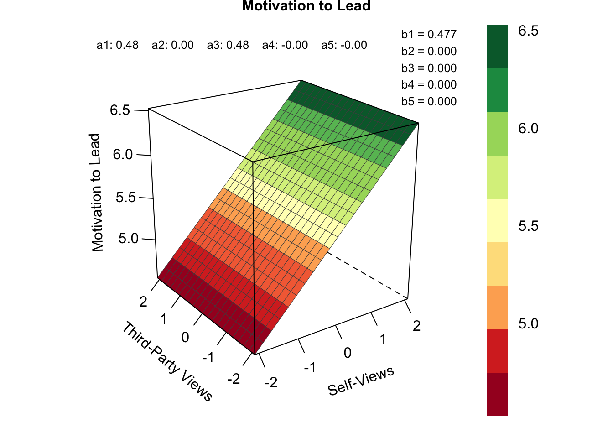
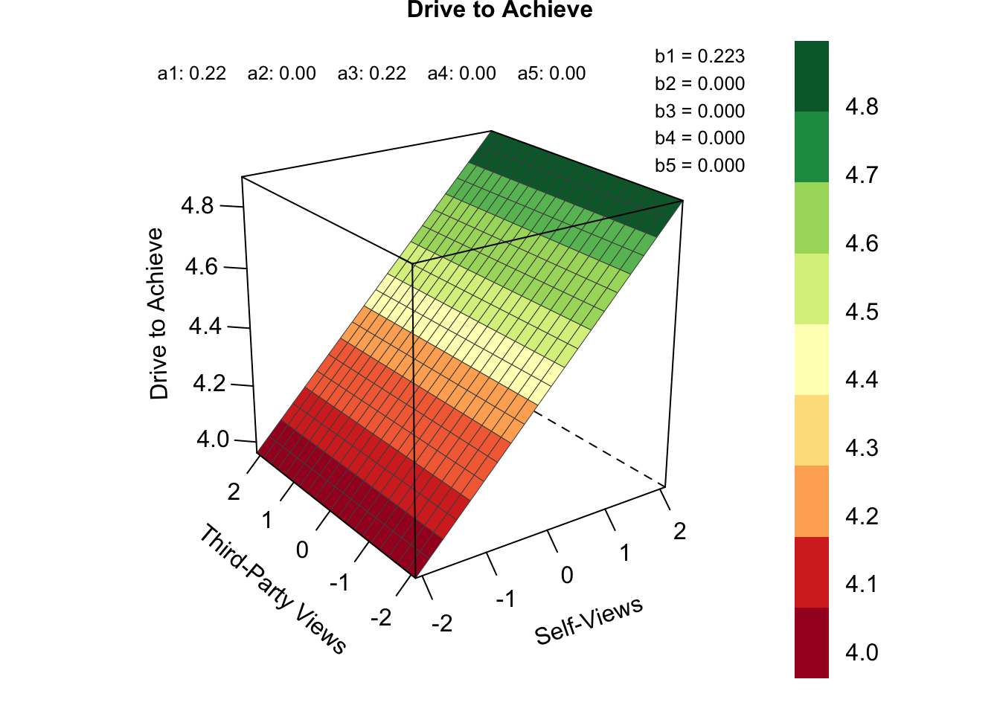

library(tidyverse) #for data wrangling
library(papaja) #for APA printing of statistics
library(lmerTest) #for mixed effects models
library(here) # for a reproducible workflow
library(BayesFactor) #for running Bayesian mixed effects models
library(RSA) #for plotting response surface analyses
library(lavaan) #for estimating polynomial regression models
library(AICcmodavg) #for computing AICc values and Akaike weights
library(gridExtra) #for putting ggplots side by side
library(broom) # for tidying output of cors
library(broom.mixed) # for tidying output of MEMs5 Management Science
Reproducible analysis script for the results reported in the following working paper:
Alzahawi, S., Reit, E.S., & Flynn, F.J. A Legend in One’s Own Mind: The Link Between Ambition and Leader Effectiveness.
5.1 Load packages
5.2 Read datasets
# Read composite short data
composites <- read_csv(here("data/composites.csv"))
# Read long data
df_long <- read_csv(here("data/long_data.csv"))
#change id and item to factor in preparation for running Bayesian mems
df_long$item <- as.factor(df_long$item)
df_long$id <- as.factor(df_long$id)
#split data into dfs with self-ratings and other-ratings
self <- df_long %>%
filter(role == "self")
others <- df_long %>%
filter(role != "self")
managers <- others %>%
filter(role == "managers")
direct_reports <- others %>%
filter(role == "direct_reports")
peers <- others %>%
filter(role == "peers")5.3 Response Surface Analysis
Does ambition account only for self-views and not for third-party views of leader effectiveness?
Our first analysis uses Response Surface Analysis to examine how ambition relates to both self-views and third-party views of leader effectiveness. Below, we reproduce the results of the Response Surface Analyses reported in the main paper.
source(here("code/RSA-helper-functions.R")) #read helper functions
# define initial model set
initial_modelset <- c(
"onlyxpos", # only positive PSV effect model
"xandypos", # positive main (PSV) effect model
"onlyxneg", # only negative PSV effect model
"xandyneg", # negative main (PSV) effect model
"discrpos", # positive discrepancy (SE) effect model
"discrneg", # negative discrepancy (SE) effect model
"SQDpos", # agreement (self-insight) effect model
"SSQDposCneg", # optimal margin effect model
"onlyypos", # positive R effect model
"onlyx2pos", # curvilinear effect of S model
"onlyy2pos", # curvilinear effect of R model
"IApos", # positive interaction effect model
"null", # null model
"full" # full polynomial model of second degree
)
RSA_function <- function(z = "ambition", df = composites) {
#create title for images
#depends on if these are the main analyses on the pooled dataset (n = 472)
#or the supplemental analyses on the dataset split by wave (n != 472)
title <- ifelse(
nrow(df)==472,
snakecase::to_title_case(z),
paste("Wave", unique(df$wave))
)
#create dataframe
dat <- df %>%
select(all_of(z), self, others) %>%
drop_na()
#rename vars for convenience
names(dat) <- c("z", "x", "y")
#center the predictor variables on the grand mean of both predictor variables
dat <- dat %>%
mutate(
grand = mean(c(x, y)),
x = x - grand,
y = y - grand
) %>%
select(!grand)
# estimate all models
out <- eam(
variables=names(dat),
modelset=initial_modelset,
data=dat
)
# reduce modelset by models which have essentially the same log-likelihood
#as simpler models nested within them
reduced_set <- initial_modelset[which(!initial_modelset %in% out$toremove)]
# Repeat analyses with reduced modelset
out_reduced <- eam(
variables=names(dat),
modelset=reduced_set,
data=dat
)
#Obtain parameter estimates of the best fitting model
par <- parameterEstimates(out_reduced$models[[1]])
#Plot the best fitting model
plot <- plotRSA(
b0=par$est[1], #intercept
x=par$est[2], #b1 #self
y=abs(par$est[3]), #b2 #others #remove minus preceding 0
x2=abs(par$est[4]), #b3 #self^2 #remove minus preceding 0
xy=abs(par$est[5]), #b4 #interaction #remove minus preceding 0
y2=abs(par$est[6]), #b5 #others^2 #remove minus preceding 0
main = title,
xlab="Self-Views",
ylab="Third-Party Views",
zlab = snakecase::to_title_case(z),
project=helpful_axes_project(out_reduced$coeftab$Modnames[1])$project,
coefs = TRUE,
axes = ""
)
# show plot
print(plot)
#Return results for best fitting model
out_reduced$aiccoeftab %>%
select(Modnames, nicenames, K, AICc, w, b1:b5) %>%
slice(1) %>% #only the best fitting model
#add important parameters (CI of b1, z and p-value)
mutate(
b1.lower = par$ci.lower[2],
b1.upper = par$ci.upper[2],
b1.z = par$z[2],
b1.p = par$pvalue[2],
measure = z
)
}
# This is the main analysis
main <- RSA_function()
# This is the first robustness check
r1 <- RSA_function(z = "motivation_to_lead")
#This is the second robustness check
r2 <- RSA_function(z = "drive_to_achieve")
RSA_results <- rbind(main, r1, r2)
RSA_results %>%
select(measure, w:b1.p) %>%
mutate_if(is.numeric, round, digits = 2) measure w b1 b2 b3 b4 b5 b1.lower b1.upper b1.z b1.p
1 ambition 0.91 0.28 0 0 0 0 0.14 0.42 3.93 0
2 motivation_to_lead 0.94 0.48 0 0 0 0 0.27 0.68 4.59 0
3 drive_to_achieve 0.97 0.22 0 0 0 0 0.11 0.34 3.77 05.4 Correlations
Does ambition relate to positive self-views of leader effectiveness?
Our second analysis examines whether ambition is positively associated with self-rated leader effectiveness. Below, we reproduce the associations reported in the main paper.
#Function to report correlations
report_cor <- function(x = ambition, y = self, df = composites) {
#Pull the independent variable x (default = ambition)
x <- pull(df, {{ x }})
#Pull the dependent variable y (default = self-rated effectiveness)
y <- pull(df, {{ y }})
#run correlation
out <- cor.test(x, y) #run correlation test
tidy(out)
}
#Calculate results
cor1 <- report_cor(ambition, self)
cor2 <- report_cor(motivation_to_lead, self)
cor3 <- report_cor(drive_to_achieve, self)
cor4 <- report_cor(ambition, leader_ability)
cor5 <- report_cor(drive_to_achieve, leader_ability)
cor_results <- tibble(
x = c(
"ambition",
"motivation_to_lead",
"drive_to_achieve",
"ambition",
"drive_to_achieve"
),
y = c(rep("self", 3), rep("leader_ability", 2)),
rbind(cor1, cor2, cor3, cor4, cor5)
) %>%
select(x:conf.high)
cor_results# A tibble: 5 × 8
x y estimate statistic p.value parameter conf.low conf.high
<chr> <chr> <dbl> <dbl> <dbl> <int> <dbl> <dbl>
1 ambition self 0.190 4.18 3.53e- 5 466 0.101 0.276
2 motivation_to_… self 0.306 4.28 3.10e- 5 177 0.167 0.433
3 drive_to_achie… self 0.209 3.61 3.68e- 4 285 0.0954 0.317
4 ambition lead… 0.169 2.91 3.90e- 3 287 0.0550 0.279
5 drive_to_achie… lead… 0.424 7.94 4.74e-14 287 0.325 0.5145.5 Frequentist Mixed Effects Models
Does ambition have a null relationship with third-party perceptions of leader effectiveness?
Our final analysis examines whether ambition is uncalibrated to third-party leadership evaluations. To assess whether ambition has a null relationship with third-party ratings of leader effectiveness, we first ran a frequentist mixed effects model predicting third-party ratings of effectiveness from ambition (while including random intercepts for leaders and survey items). Below, we reproduce the results reported in the main paper.
# Function to report results of MEM
report_mem <- function(Rater = "others", x = ambition, y = effectiveness, Wave = 1:2){
#Use the correct dataframe: self/other-rated effectiveness
if(Rater == "self") {dat <- self}
if(Rater != "self") {dat <- others}
#Filter for the correct wave
dat <- dat %>% filter(wave %in% Wave)
#Filter for a specific rater role if specified, otherwise model will be run
# across all other or self ratings
if(!Rater %in% c("self", "others")) {
dat <- dat %>%
filter(role == Rater)
}
#Pull the independent variable x (default = ambition)
x <- pull(dat, {{ x }})
#Pull the dependent variable y (default = effectiveness)
y <- pull(dat, {{ y }})
#Run mem
fit <- lmer(y ~ x + (1 | id) + (1 | item), data = dat)
#Return result in tibble
tibble(
rater = Rater, tidy(fit) %>% filter(term == "x")
) %>%
select(rater, estimate:p.value)
}
# Main result
main <- report_mem()
# First robustness check
r1 <- report_mem(x = motivation_to_lead)
# Second robustness check
r2 <- report_mem(x = drive_to_achieve)
tibble(
x = c("ambition", "motivation_to_lead", "drive_to_achieve"),
rbind(main, r1, r2)
)# A tibble: 3 × 7
x rater estimate std.error statistic df p.value
<chr> <chr> <dbl> <dbl> <dbl> <dbl> <dbl>
1 ambition others 0.0237 0.0225 1.05 464. 0.293
2 motivation_to_lead others 0.0116 0.0346 0.335 175. 0.738
3 drive_to_achieve others 0.0684 0.0387 1.77 285. 0.07815.6 Equivalence tests
Does ambition have a null relationship with third-party perceptions of leader effectiveness?
Second, we accompany the preliminary frequentist test with an equivalence test using the two one-sided tests procedure (TOST, Lakens et al. 2018). Below, we reproduce the results reported in the main paper.
# Frequentist equivalence tests for other-ratings
# Equivalence bounds
bound_u <- 0.15 # Upper equivalence bound
bound_l <- -0.15 # Lower equivalence bound
run_eq <- function(df = others, x = ambition, Wave = 1:2) {
#Filter for the correct wave
df <- df %>% filter(wave %in% Wave)
#Pull the independent variable x (default = ambition)
x <- pull(df, {{ x }})
# Fit model
m1 <- lmer(effectiveness ~ x + (1 | id) + (1 | item), data = df)
#we can use the contest1D functions of the lmerTest package to perform tests
#centered on the lower and upper equivalence bound, using the rhs option
# get t value for test against lower bound
lower <- contest1D(m1, c(0, 1), confint=TRUE, rhs=bound_l)
# get t value for test against upper bound
upper <- contest1D(m1, c(0, 1), confint=TRUE, rhs=bound_u)
# get dataframe with results for lower and upper bound
tibble(
df = rep(lower$df) %>% round(2),
t = c(lower$`t value`, upper$`t value`) %>% round(2),
#The test provided by contest1D is two-sided, divide p-value by 2
p = c(lower$`Pr(>|t|)`/2, upper$`Pr(>|t|)`/2) %>% round(3)
#If both these tests are significant, so is the test for equivalence
) %>%
mutate(
p = ifelse(p < .001, "< .001", paste("=", gsub("0\\.", ".", p))),
bound = c("lower", "upper"),
result = paste0("t(", df, ") = ", t, ", p ", p)
) %>%
select(bound, result)
}
# Main result
main <- run_eq() %>% mutate(x = "ambition")
# First robustness check
r1 <- run_eq(x = motivation_to_lead) %>% mutate(x = "motivation_to_lead")
# Second robustness check
r2 <- run_eq(x = drive_to_achieve) %>% mutate(x = "drive_to_achieve")
bind_rows(main, r1, r2) %>%
select(x, bound, result)# A tibble: 6 × 3
x bound result
<chr> <chr> <chr>
1 ambition lower t(464.2) = 7.72, p < .001
2 ambition upper t(464.2) = -5.61, p < .001
3 motivation_to_lead lower t(175.2) = 4.67, p < .001
4 motivation_to_lead upper t(175.2) = -4, p < .001
5 drive_to_achieve lower t(284.65) = 5.64, p < .001
6 drive_to_achieve upper t(284.65) = -2.11, p = .0185.7 Bayes Factors
Does ambition have a null relationship with third-party perceptions of leader effectiveness?
Our final test uses Bayesian statistics to evaluate the support in favor of the null hypothesis. We calculate Bayes Factors that compare the support for two mixed effects models: a full model (effectiveness ratings predicted from ambition and a random intercept for leader and survey item) versus a null model (effectiveness ratings predicted from a random intercept for leader and survey item).
Below, we reproduce the Bayes Factors reported in the main paper (see Table 1). Note that the analysis below takes a while to run. The reader can simply refer to the html document automatically generated from the code, to see the results. Alternatively, run the code in an R script to speed things up.
# Bayesian tests
get_BF <- function(prior = "medium", df = others, x = ambition, Wave = 1:2) {
#Filter for the correct wave
df <- df %>% filter(wave %in% Wave)
#Pull the independent variable x (default = ambition)
df$x <- pull(df, {{ x }})
#lmBF() does not accept missing values in x
df <- df %>%
filter(!is.na(x))
set.seed(1512)
#Run full model
full_BF <- lmBF(
effectiveness ~ x + id + item,
data = df, whichRandom = c('id', 'item'),
rscaleCont = prior
)
set.seed(1512)
#Run null model
null_BF <- lmBF(
effectiveness ~ id + item,
data = df, whichRandom = c('id', 'item'),
rscaleCont = prior
)
#Return Bayes Factor in favor of the null
as.vector(null_BF / full_BF)
}
r_values <- c("medium", "wide", "ultrawide")
# Other-rated effectiveness
others_BF <- sapply(r_values, get_BF)
# Manager-rated effectiveness
managers_BF <- sapply(r_values, get_BF, df = managers)
# Peer-rated effectiveness
peers_BF <- sapply(r_values, get_BF, df = peers)
# Subordinate-rated effectiveness
direct_reports_BF <- sapply(r_values, get_BF, df = direct_reports)
# Main result
BF_main <- tibble(
x = rep("Ambition"),
Rater = rep(c("Others", "Managers", "Peers", "Direct_Reports"), each = 3),
Prior = rep(r_values, 4),
BF = c(others_BF, managers_BF, peers_BF, direct_reports_BF) %>% round(2)
)
BF_main %>%
pivot_wider(
names_from = Prior,
values_from = BF
)# A tibble: 4 × 5
x Rater medium wide ultrawide
<chr> <chr> <dbl> <dbl> <dbl>
1 Ambition Others 16.4 23.1 32.6
2 Ambition Managers 12.5 17.7 25.0
3 Ambition Peers 15.0 21.2 29.9
4 Ambition Direct_Reports 1.91 2.67 3.76# First robustness check
# Other-rated effectiveness
others_r1 <- sapply(r_values, get_BF, x = motivation_to_lead)
# Manager-rated effectiveness
managers_r1 <- sapply(r_values, get_BF, df = managers, x = motivation_to_lead)
# Peer-rated effectiveness
peers_r1 <- sapply(r_values, get_BF, df = peers, x = motivation_to_lead)
# Subordinate-rated effectiveness
direct_reports_r1 <- sapply(r_values, get_BF, df = direct_reports, x = motivation_to_lead)
BF_motivation <- tibble(
x = rep("Motivation to Lead"),
Rater = rep(c("Others", "Managers", "Peers", "Direct_Reports"), each = 3),
Prior = rep(r_values, 4),
BF = c(others_r1, managers_r1, peers_r1, direct_reports_r1) %>% round(2)
)
BF_motivation %>%
pivot_wider(
names_from = Prior,
values_from = BF
)# A tibble: 4 × 5
x Rater medium wide ultrawide
<chr> <chr> <dbl> <dbl> <dbl>
1 Motivation to Lead Others 17.1 24.1 34.0
2 Motivation to Lead Managers 9.51 13.4 18.8
3 Motivation to Lead Peers 10.3 14.5 20.4
4 Motivation to Lead Direct_Reports 7.77 10.9 15.3# Second robustness check
# Other-rated effectiveness
others_r2 <- sapply(r_values, get_BF, x = drive_to_achieve)
# Manager-rated effectiveness
managers_r2 <- sapply(r_values, get_BF, df = managers, x = drive_to_achieve)
# Peer-rated effectiveness
peers_r2 <- sapply(r_values, get_BF, df = peers, x = drive_to_achieve)
# Subordinate-rated effectiveness
direct_reports_r2 <- sapply(r_values, get_BF, df = direct_reports, x = drive_to_achieve)
BF_drive <- tibble(
x = rep("Drive to Achieve"),
Rater = rep(c("Others", "Managers", "Peers", "Direct_Reports"), each = 3),
Prior = rep(r_values, 4),
BF = c(others_r2, managers_r2, peers_r2, direct_reports_r2) %>% round(2)
)
BF_drive %>%
pivot_wider(
names_from = Prior,
values_from = BF
)# A tibble: 4 × 5
x Rater medium wide ultrawide
<chr> <chr> <dbl> <dbl> <dbl>
1 Drive to Achieve Others 4.81 6.77 9.54
2 Drive to Achieve Managers 5.16 7.23 10.2
3 Drive to Achieve Peers 15.6 21.9 31.0
4 Drive to Achieve Direct_Reports 6.05 8.48 12.0